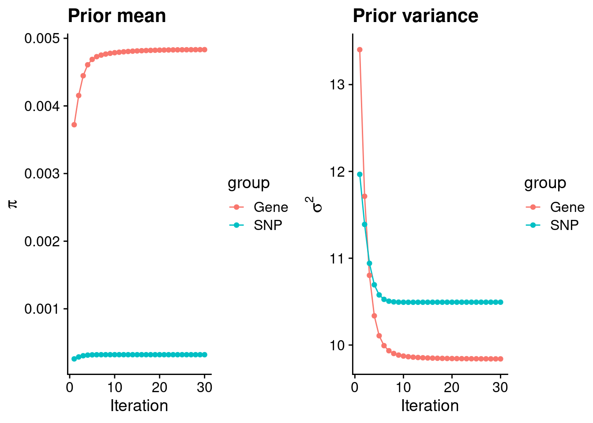
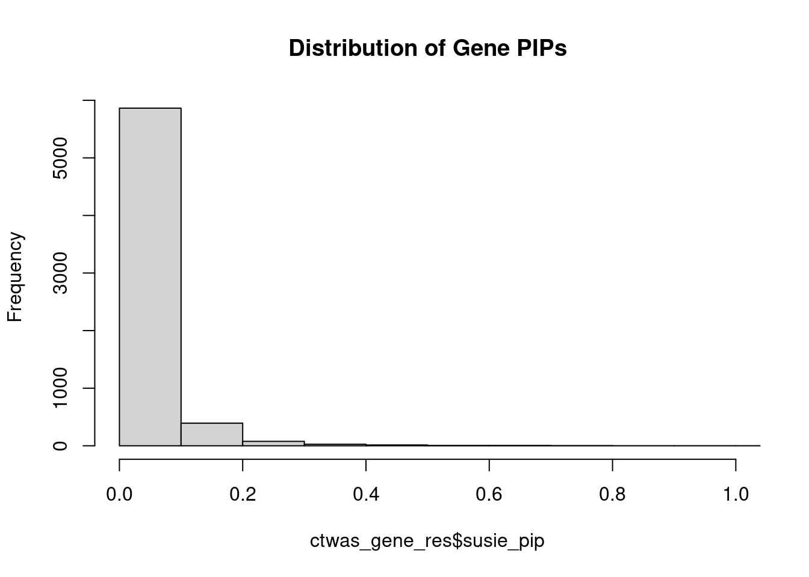
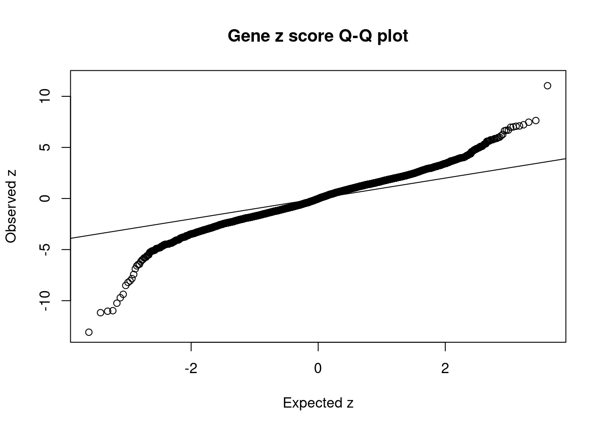
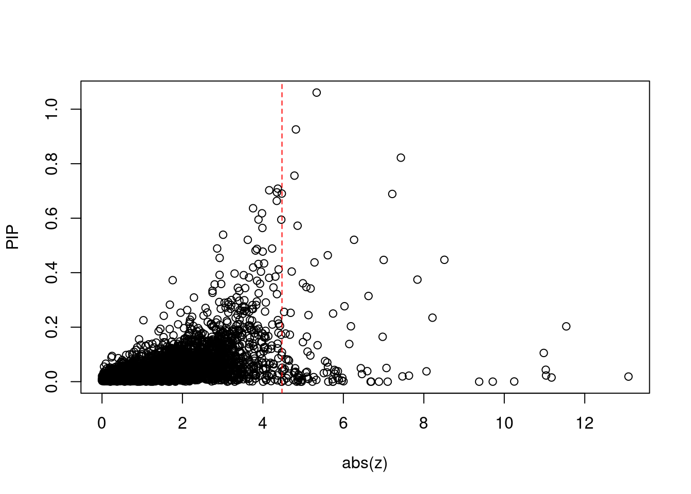
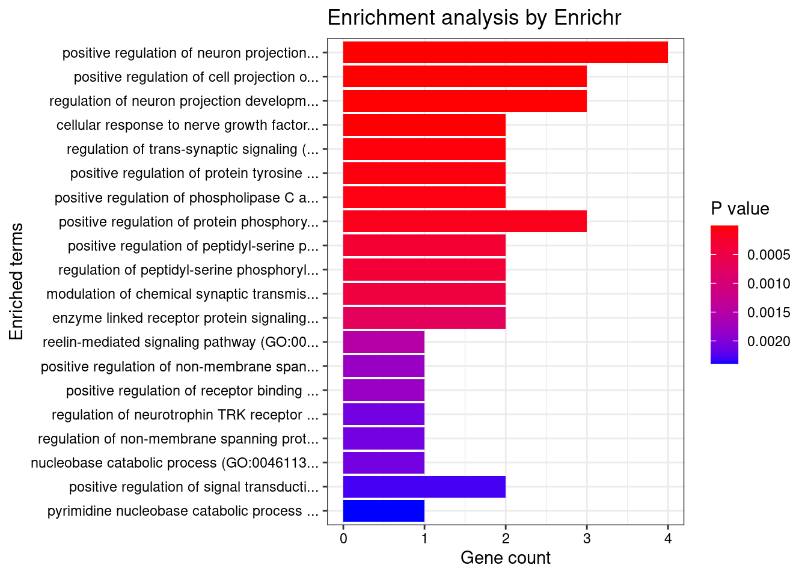
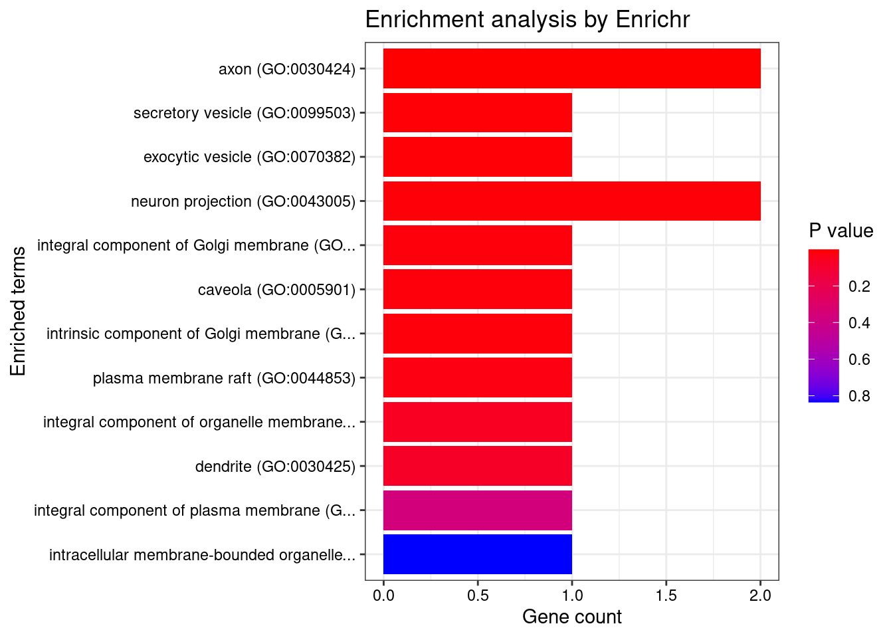
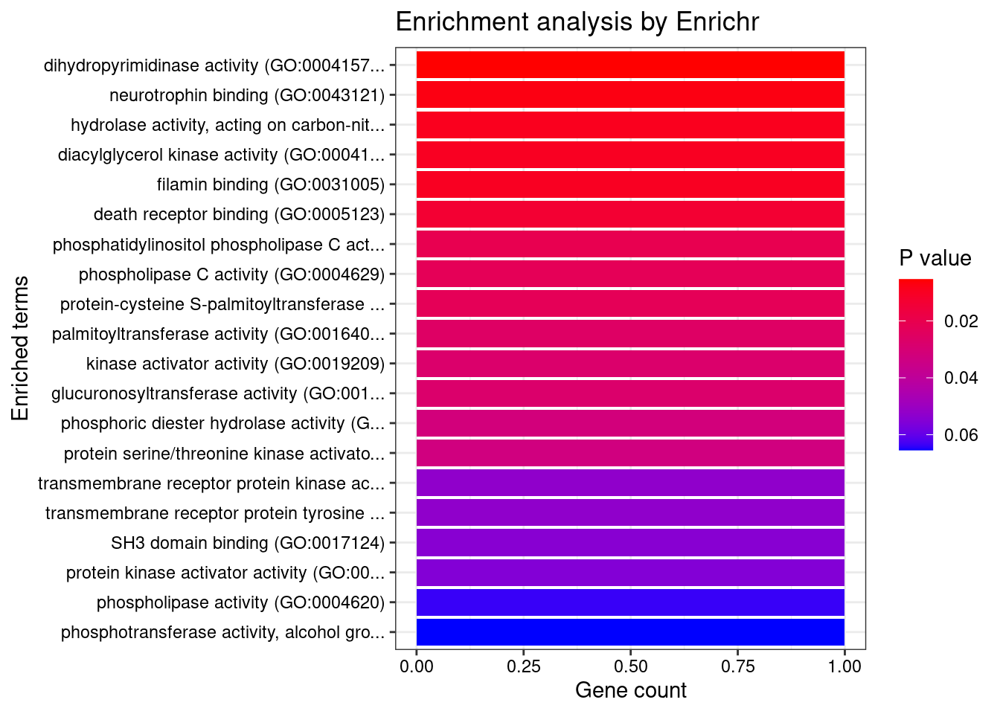

Last updated: 2022-05-19
Checks: 5 2
Knit directory: cTWAS_analysis/
This reproducible R Markdown analysis was created with workflowr (version 1.7.0). The Checks tab describes the reproducibility checks that were applied when the results were created. The Past versions tab lists the development history.
The R Markdown file has unstaged changes. To know which version of the R Markdown file created these results, you’ll want to first commit it to the Git repo. If you’re still working on the analysis, you can ignore this warning. When you’re finished, you can run wflow_publish to commit the R Markdown file and build the HTML.
Great job! The global environment was empty. Objects defined in the global environment can affect the analysis in your R Markdown file in unknown ways. For reproduciblity it’s best to always run the code in an empty environment.
The command set.seed(20211220) was run prior to running the code in the R Markdown file. Setting a seed ensures that any results that rely on randomness, e.g. subsampling or permutations, are reproducible.
Great job! Recording the operating system, R version, and package versions is critical for reproducibility.
Nice! There were no cached chunks for this analysis, so you can be confident that you successfully produced the results during this run.
Using absolute paths to the files within your workflowr project makes it difficult for you and others to run your code on a different machine. Change the absolute path(s) below to the suggested relative path(s) to make your code more reproducible.
| absolute | relative |
|---|---|
| /project2/xinhe/shengqian/cTWAS/cTWAS_analysis/data/ | data |
| /project2/xinhe/shengqian/cTWAS/cTWAS_analysis/code/ctwas_config.R | code/ctwas_config.R |
Great! You are using Git for version control. Tracking code development and connecting the code version to the results is critical for reproducibility.
The results in this page were generated with repository version be614ed. See the Past versions tab to see a history of the changes made to the R Markdown and HTML files.
Note that you need to be careful to ensure that all relevant files for the analysis have been committed to Git prior to generating the results (you can use wflow_publish or wflow_git_commit). workflowr only checks the R Markdown file, but you know if there are other scripts or data files that it depends on. Below is the status of the Git repository when the results were generated:
Ignored files:
Ignored: .Rhistory
Ignored: .ipynb_checkpoints/
Untracked files:
Untracked: G_list.RData
Untracked: Rplot.png
Untracked: SCZ_annotation.xlsx
Untracked: analysis/.ipynb_checkpoints/
Untracked: code/.ipynb_checkpoints/
Untracked: code/AF_out/
Untracked: code/Autism_out/
Untracked: code/BMI_S_out/
Untracked: code/BMI_out/
Untracked: code/Glucose_out/
Untracked: code/LDL_S_out/
Untracked: code/SCZ_2014_EUR_out/
Untracked: code/SCZ_2018_S_out/
Untracked: code/SCZ_2018_out/
Untracked: code/SCZ_2020_Single_out/
Untracked: code/SCZ_2020_out/
Untracked: code/SCZ_S_out/
Untracked: code/SCZ_out/
Untracked: code/T2D_out/
Untracked: code/ctwas_config.R
Untracked: code/mapping.R
Untracked: code/out/
Untracked: code/process_scz_2018_snps.R
Untracked: code/run_AF_analysis.sbatch
Untracked: code/run_AF_analysis.sh
Untracked: code/run_AF_ctwas_rss_LDR.R
Untracked: code/run_Autism_analysis.sbatch
Untracked: code/run_Autism_analysis.sh
Untracked: code/run_Autism_ctwas_rss_LDR.R
Untracked: code/run_BMI_analysis.sbatch
Untracked: code/run_BMI_analysis.sh
Untracked: code/run_BMI_analysis_S.sbatch
Untracked: code/run_BMI_analysis_S.sh
Untracked: code/run_BMI_ctwas_rss_LDR.R
Untracked: code/run_BMI_ctwas_rss_LDR_S.R
Untracked: code/run_Glucose_analysis.sbatch
Untracked: code/run_Glucose_analysis.sh
Untracked: code/run_Glucose_ctwas_rss_LDR.R
Untracked: code/run_LDL_analysis_S.sbatch
Untracked: code/run_LDL_analysis_S.sh
Untracked: code/run_LDL_ctwas_rss_LDR_S.R
Untracked: code/run_SCZ_2014_EUR_analysis.sbatch
Untracked: code/run_SCZ_2014_EUR_analysis.sh
Untracked: code/run_SCZ_2014_EUR_ctwas_rss_LDR.R
Untracked: code/run_SCZ_2018_analysis.sbatch
Untracked: code/run_SCZ_2018_analysis.sh
Untracked: code/run_SCZ_2018_analysis_S.sbatch
Untracked: code/run_SCZ_2018_analysis_S.sh
Untracked: code/run_SCZ_2018_ctwas_rss_LDR.R
Untracked: code/run_SCZ_2018_ctwas_rss_LDR_S.R
Untracked: code/run_SCZ_2020_Single_analysis.sbatch
Untracked: code/run_SCZ_2020_Single_analysis.sh
Untracked: code/run_SCZ_2020_Single_ctwas_rss_LDR.R
Untracked: code/run_SCZ_2020_analysis.sbatch
Untracked: code/run_SCZ_2020_analysis.sh
Untracked: code/run_SCZ_2020_ctwas_rss_LDR.R
Untracked: code/run_SCZ_analysis.sbatch
Untracked: code/run_SCZ_analysis.sh
Untracked: code/run_SCZ_analysis_S.sbatch
Untracked: code/run_SCZ_analysis_S.sh
Untracked: code/run_SCZ_ctwas_rss_LDR.R
Untracked: code/run_SCZ_ctwas_rss_LDR_S.R
Untracked: code/run_T2D_analysis.sbatch
Untracked: code/run_T2D_analysis.sh
Untracked: code/run_T2D_ctwas_rss_LDR.R
Untracked: code/wflow_build.R
Untracked: code/wflow_build.sbatch
Untracked: data/.ipynb_checkpoints/
Untracked: data/GO_Terms/
Untracked: data/PGC3_SCZ_wave3_public.v2.tsv
Untracked: data/SCZ/
Untracked: data/SCZ_2014_EUR/
Untracked: data/SCZ_2018/
Untracked: data/SCZ_2018_S/
Untracked: data/SCZ_2020/
Untracked: data/SCZ_S/
Untracked: data/Supplementary Table 15 - MAGMA.xlsx
Untracked: data/Supplementary Table 20 - Prioritised Genes.xlsx
Untracked: data/T2D/
Untracked: data/UKBB/
Untracked: data/UKBB_SNPs_Info.text
Untracked: data/gene_OMIM.txt
Untracked: data/gene_pip_0.8.txt
Untracked: data/mashr_Heart_Atrial_Appendage.db
Untracked: data/mashr_sqtl/
Untracked: data/scz_2018.RDS
Untracked: data/summary_known_genes_annotations.xlsx
Untracked: data/untitled.txt
Untracked: top_genes_32.txt
Untracked: top_genes_37.txt
Untracked: top_genes_43.txt
Untracked: top_genes_54.txt
Untracked: top_genes_81.txt
Untracked: z_snp_pos_SCZ.RData
Untracked: z_snp_pos_SCZ_2014_EUR.RData
Untracked: z_snp_pos_SCZ_2018.RData
Untracked: z_snp_pos_SCZ_2020.RData
Unstaged changes:
Deleted: analysis/BMI_S_results.Rmd
Modified: analysis/SCZ_2018_Brain_Amygdala_S.Rmd
Modified: analysis/SCZ_2018_Brain_Anterior_cingulate_cortex_BA24_S.Rmd
Modified: analysis/SCZ_2018_Brain_Caudate_basal_ganglia_S.Rmd
Modified: analysis/SCZ_2018_Brain_Cerebellar_Hemisphere_S.Rmd
Modified: analysis/SCZ_2018_Brain_Cerebellum_S.Rmd
Modified: analysis/SCZ_2018_Brain_Cortex_S.Rmd
Modified: analysis/SCZ_2018_Brain_Frontal_Cortex_BA9_S.Rmd
Modified: analysis/SCZ_2018_Brain_Hippocampus_S.Rmd
Modified: analysis/SCZ_2018_Brain_Hypothalamus_S.Rmd
Modified: analysis/SCZ_2018_Brain_Nucleus_accumbens_basal_ganglia_S.Rmd
Modified: analysis/SCZ_2018_Brain_Putamen_basal_ganglia_S.Rmd
Modified: analysis/SCZ_2018_Brain_Spinal_cord_cervical_c-1_S.Rmd
Modified: analysis/SCZ_2018_Brain_Substantia_nigra_S.Rmd
Modified: analysis/ttt.Rmd
Note that any generated files, e.g. HTML, png, CSS, etc., are not included in this status report because it is ok for generated content to have uncommitted changes.
These are the previous versions of the repository in which changes were made to the R Markdown (analysis/SCZ_2018_Brain_Amygdala_S.Rmd) and HTML (docs/SCZ_2018_Brain_Amygdala_S.html) files. If you’ve configured a remote Git repository (see ?wflow_git_remote), click on the hyperlinks in the table below to view the files as they were in that past version.
| File | Version | Author | Date | Message |
|---|---|---|---|---|
| Rmd | be614ed | sq-96 | 2022-05-19 | update |
| html | be614ed | sq-96 | 2022-05-19 | update |
| Rmd | 7d08c9b | sq-96 | 2022-05-18 | update |
| html | 7d08c9b | sq-96 | 2022-05-18 | update |
| Rmd | 2749be9 | sq-96 | 2022-05-12 | update |
| html | 2749be9 | sq-96 | 2022-05-12 | update |
| html | 011327d | sq-96 | 2022-05-12 | update |
| Rmd | 6c6abbd | sq-96 | 2022-05-12 | update |
library(reticulate)
use_python("/scratch/midway2/shengqian/miniconda3/envs/PythonForR/bin/python",required=T)#number of imputed weights
nrow(qclist_all)[1] 15774#number of imputed weights by chromosome
table(qclist_all$chr)
1 2 3 4 5 6 7 8 9 10 11 12 13 14 15 16
1480 1078 891 631 654 819 931 556 642 735 948 858 322 583 532 618
17 18 19 20 21 22
1087 198 1146 543 34 488 #number of imputed weights without missing variants
sum(qclist_all$nmiss==0)[1] 14087#proportion of imputed weights without missing variants
mean(qclist_all$nmiss==0)[1] 0.8931INFO:numexpr.utils:Note: NumExpr detected 56 cores but "NUMEXPR_MAX_THREADS" not set, so enforcing safe limit of 8.finish
Attaching package: 'dplyr'The following objects are masked from 'package:stats':
filter, lagThe following objects are masked from 'package:base':
intersect, setdiff, setequal, union
| Version | Author | Date |
|---|---|---|
| 2749be9 | sq-96 | 2022-05-12 |
gene snp
0.0048321 0.0003214 gene snp
9.84 10.49 [1] 105318[1] 6393 6309950 gene snp
0.002886 0.202078 [1] 0.003939 1.090103
genename region_tag susie_pip mu2 PVE z num_intron num_sqtl
6193 ZDHHC20 13_2 0.7353 24.63 1.277e-04 -4.784 3 4
1662 DPYSL3 5_86 0.7025 25.41 1.190e-04 -4.157 1 1
611 BDNF 11_19 0.6948 23.25 1.066e-04 -4.348 1 1
2984 LRP8 1_33 0.6357 24.92 1.347e-04 -4.820 3 3
3695 NTRK3 15_41 0.5946 22.72 7.628e-05 -4.457 1 1
2889 LINC00320 21_6 0.5011 28.32 1.382e-04 5.336 6 6
235 AKT3 1_128 0.4691 34.14 7.453e-05 6.266 5 5
2836 LAMA5 20_37 0.4676 30.04 9.116e-05 -4.371 10 14
561 B9D1 17_16 0.4377 28.72 5.225e-05 -5.282 1 1
897 CASP2 7_89 0.4319 22.43 3.974e-05 -3.889 1 1
4906 SF3B1 2_117 0.4313 43.83 7.836e-05 7.002 2 2
5966 UQCRC2 16_19 0.4042 22.91 3.555e-05 4.716 1 1
4828 SDCCAG8 1_128 0.3729 28.50 4.337e-05 5.612 5 8
1054 CECR2 22_2 0.3594 20.94 2.568e-05 3.928 1 1
552 B3GAT1 11_84 0.3480 25.37 4.977e-05 4.345 7 11
1554 DGKZ 11_28 0.3445 46.65 1.051e-04 7.216 2 2
510 ATP2B2 3_8 0.3195 31.83 4.405e-05 4.229 3 3
1605 DNAJB1 19_12 0.2911 19.50 1.569e-05 3.988 1 1
1482 DBF4B 17_26 0.2867 20.61 3.245e-05 -3.890 4 4
5487 TECR 19_12 0.2730 19.30 1.390e-05 3.972 3 3 genename region_tag susie_pip mu2 PVE z num_intron num_sqtl
2889 LINC00320 21_6 0.5011 28.32 1.382e-04 5.336 6 6
2984 LRP8 1_33 0.6357 24.92 1.347e-04 -4.820 3 3
6193 ZDHHC20 13_2 0.7353 24.63 1.277e-04 -4.784 3 4
1662 DPYSL3 5_86 0.7025 25.41 1.190e-04 -4.157 1 1
611 BDNF 11_19 0.6948 23.25 1.066e-04 -4.348 1 1
1554 DGKZ 11_28 0.3445 46.65 1.051e-04 7.216 2 2
2836 LAMA5 20_37 0.4676 30.04 9.116e-05 -4.371 10 14
4906 SF3B1 2_117 0.4313 43.83 7.836e-05 7.002 2 2
3695 NTRK3 15_41 0.5946 22.72 7.628e-05 -4.457 1 1
235 AKT3 1_128 0.4691 34.14 7.453e-05 6.266 5 5
371 APOPT1 14_54 0.2097 43.94 7.162e-05 -7.429 5 6
561 B9D1 17_16 0.4377 28.72 5.225e-05 -5.282 1 1
552 B3GAT1 11_84 0.3480 25.37 4.977e-05 4.345 7 11
370 APOM 6_26 0.2029 123.81 4.840e-05 11.541 2 2
510 ATP2B2 3_8 0.3195 31.83 4.405e-05 4.229 3 3
4828 SDCCAG8 1_128 0.3729 28.50 4.337e-05 5.612 5 8
897 CASP2 7_89 0.4319 22.43 3.974e-05 -3.889 1 1
5966 UQCRC2 16_19 0.4042 22.91 3.555e-05 4.716 1 1
2209 GIGYF2 2_137 0.2469 50.80 3.446e-05 -7.841 4 4
1482 DBF4B 17_26 0.2867 20.61 3.245e-05 -3.890 4 4

[1] 0.01611 genename region_tag susie_pip mu2 PVE z num_intron
3933 PGBD1 6_22 9.681e-03 157.22 1.473e-07 -13.087 2
370 APOM 6_26 2.029e-01 123.81 4.840e-05 11.541 2
1506 DDR1 6_26 1.524e-02 119.73 2.641e-07 -11.175 2
480 ATAT1 6_24 2.265e-02 79.41 3.868e-07 11.039 1
795 C6orf136 6_24 2.184e-02 79.12 7.164e-07 -11.031 2
2082 FLOT1 6_24 1.826e-02 77.80 1.418e-06 -10.981 6
568 BAG6 6_26 5.880e-04 108.10 3.549e-10 -10.247 4
4565 RNF5 6_26 6.016e-05 96.37 3.312e-12 -9.714 1
968 CCHCR1 6_26 7.875e-10 89.72 5.406e-22 -9.376 8
3686 NT5C2 10_66 1.533e-01 46.77 2.909e-05 -8.511 7
3043 MAD1L1 7_3 1.563e-01 63.35 1.665e-05 -8.215 3
2468 HLA-F 6_23 2.762e-02 61.03 4.672e-07 -8.066 2
2209 GIGYF2 2_137 2.469e-01 50.80 3.446e-05 -7.841 4
4685 RP5-874C20.8 6_22 5.863e-03 37.39 3.446e-08 7.631 4
6384 ZSCAN16 6_22 8.769e-03 52.88 5.447e-08 7.468 3
371 APOPT1 14_54 2.097e-01 43.94 7.162e-05 -7.429 5
1554 DGKZ 11_28 3.445e-01 46.65 1.051e-04 7.216 2
4968 SKIV2L 6_26 2.813e-08 77.27 5.804e-19 7.101 4
4906 SF3B1 2_117 4.313e-01 43.83 7.836e-05 7.002 2
485 ATG13 11_28 8.231e-02 43.02 5.534e-06 6.977 2
num_sqtl
3933 3
370 2
1506 2
480 1
795 2
2082 6
568 6
4565 1
968 12
3686 9
3043 3
2468 3
2209 4
4685 4
6384 3
371 6
1554 2
4968 5
4906 2
485 2#number of genes for gene set enrichment
length(genes)[1] 6Uploading data to Enrichr... Done.
Querying GO_Biological_Process_2021... Done.
Querying GO_Cellular_Component_2021... Done.
Querying GO_Molecular_Function_2021... Done.
Parsing results... Done.
[1] "GO_Biological_Process_2021"
Term
1 positive regulation of neuron projection development (GO:0010976)
2 positive regulation of cell projection organization (GO:0031346)
3 regulation of neuron projection development (GO:0010975)
4 cellular response to nerve growth factor stimulus (GO:1990090)
5 regulation of trans-synaptic signaling (GO:0099177)
6 positive regulation of protein tyrosine kinase activity (GO:0061098)
7 positive regulation of phospholipase C activity (GO:0010863)
8 positive regulation of protein phosphorylation (GO:0001934)
9 positive regulation of peptidyl-serine phosphorylation (GO:0033138)
10 regulation of peptidyl-serine phosphorylation (GO:0033135)
11 modulation of chemical synaptic transmission (GO:0050804)
12 enzyme linked receptor protein signaling pathway (GO:0007167)
13 reelin-mediated signaling pathway (GO:0038026)
14 positive regulation of non-membrane spanning protein tyrosine kinase activity (GO:1903997)
15 positive regulation of receptor binding (GO:1900122)
16 regulation of neurotrophin TRK receptor signaling pathway (GO:0051386)
17 regulation of non-membrane spanning protein tyrosine kinase activity (GO:1903995)
18 nucleobase catabolic process (GO:0046113)
19 positive regulation of signal transduction (GO:0009967)
20 pyrimidine nucleobase catabolic process (GO:0006208)
21 regulation of collateral sprouting (GO:0048670)
22 regulation of positive chemotaxis (GO:0050926)
23 regulation of receptor binding (GO:1900120)
24 nerve growth factor signaling pathway (GO:0038180)
25 positive regulation of dendritic spine morphogenesis (GO:0061003)
26 positive regulation of dendrite development (GO:1900006)
27 actin crosslink formation (GO:0051764)
28 pyrimidine nucleobase metabolic process (GO:0006206)
29 negative regulation of myotube differentiation (GO:0010832)
30 regulation of phospholipase C activity (GO:1900274)
31 neurotrophin TRK receptor signaling pathway (GO:0048011)
32 positive regulation of positive chemotaxis (GO:0050927)
33 pyrimidine-containing compound catabolic process (GO:0072529)
34 response to axon injury (GO:0048678)
35 positive regulation of CREB transcription factor activity (GO:0032793)
36 negative regulation of striated muscle cell differentiation (GO:0051154)
37 positive regulation of actin cytoskeleton reorganization (GO:2000251)
38 transmembrane receptor protein tyrosine kinase signaling pathway (GO:0007169)
39 regulation of cell migration (GO:0030334)
40 positive regulation of dendrite morphogenesis (GO:0050775)
41 neurotrophin signaling pathway (GO:0038179)
42 positive regulation of dendritic spine development (GO:0060999)
43 peptidyl-L-cysteine S-palmitoylation (GO:0018230)
44 peptidyl-S-diacylglycerol-L-cysteine biosynthetic process from peptidyl-cysteine (GO:0018231)
45 positive regulation of phospholipase activity (GO:0010518)
46 regulation of myotube differentiation (GO:0010830)
47 peripheral nervous system development (GO:0007422)
48 positive regulation of filopodium assembly (GO:0051491)
49 cellular response to cytokine stimulus (GO:0071345)
50 positive regulation of synapse assembly (GO:0051965)
51 regulation of response to biotic stimulus (GO:0002831)
52 protein palmitoylation (GO:0018345)
53 activation of protein kinase B activity (GO:0032148)
54 activation of phospholipase C activity (GO:0007202)
55 regulation of dendritic spine morphogenesis (GO:0061001)
56 actin filament bundle assembly (GO:0051017)
57 actin filament bundle organization (GO:0061572)
58 regulation of protein localization to cell surface (GO:2000008)
59 regulation of actin cytoskeleton reorganization (GO:2000249)
60 regulation of apoptotic signaling pathway (GO:2001233)
61 regulation of protein tyrosine kinase activity (GO:0061097)
62 protein acylation (GO:0043543)
63 regulation of dendrite development (GO:0050773)
64 regulation of filopodium assembly (GO:0051489)
65 positive regulation of axonogenesis (GO:0050772)
66 positive regulation of nervous system development (GO:0051962)
67 positive regulation of chemotaxis (GO:0050921)
68 regulation of cellular protein localization (GO:1903827)
69 regulation of synapse assembly (GO:0051963)
70 negative regulation of cell projection organization (GO:0031345)
71 positive regulation of developmental growth (GO:0048639)
72 plasma membrane bounded cell projection morphogenesis (GO:0120039)
73 positive regulation of cell junction assembly (GO:1901890)
74 positive regulation of protein binding (GO:0032092)
75 negative regulation of neuron projection development (GO:0010977)
76 protein lipidation (GO:0006497)
77 diterpenoid metabolic process (GO:0016101)
78 regulation of innate immune response (GO:0045088)
79 synapse assembly (GO:0007416)
80 establishment of protein localization to membrane (GO:0090150)
81 negative regulation of neuron apoptotic process (GO:0043524)
82 positive regulation of phosphatidylinositol 3-kinase signaling (GO:0014068)
83 negative regulation of apoptotic signaling pathway (GO:2001234)
84 regulation of neuron differentiation (GO:0045664)
85 negative regulation of protein modification process (GO:0031400)
86 positive regulation of cytoskeleton organization (GO:0051495)
87 positive regulation of plasma membrane bounded cell projection assembly (GO:0120034)
88 regulation of defense response (GO:0031347)
89 negative regulation of phosphorylation (GO:0042326)
90 protein targeting to membrane (GO:0006612)
91 retinoid metabolic process (GO:0001523)
92 regulation of peptidyl-tyrosine phosphorylation (GO:0050730)
93 regulation of kinase activity (GO:0043549)
94 regulation of neuron apoptotic process (GO:0043523)
95 negative regulation of neuron death (GO:1901215)
96 positive regulation of cell growth (GO:0030307)
97 cell junction assembly (GO:0034329)
98 activation of GTPase activity (GO:0090630)
99 regulation of phosphatidylinositol 3-kinase signaling (GO:0014066)
100 activation of protein kinase activity (GO:0032147)
101 negative regulation of cell motility (GO:2000146)
102 positive regulation of kinase activity (GO:0033674)
Overlap Adjusted.P.value Genes
1 4/88 7.870e-07 BDNF;NTRK3;DPYSL3;LRP8
2 3/117 2.909e-04 BDNF;NTRK3;DPYSL3
3 3/165 5.450e-04 BDNF;NTRK3;DPYSL3
4 2/22 6.523e-04 BDNF;NTRK3
5 2/35 1.342e-03 BDNF;LRP8
6 2/42 1.453e-03 BDNF;LRP8
7 2/43 1.453e-03 BDNF;NTRK3
8 3/371 2.293e-03 BDNF;NTRK3;LRP8
9 2/93 5.314e-03 BDNF;NTRK3
10 2/98 5.314e-03 BDNF;NTRK3
11 2/109 5.974e-03 BDNF;LRP8
12 2/140 9.015e-03 BDNF;NTRK3
13 1/5 1.646e-02 LRP8
14 1/6 1.646e-02 BDNF
15 1/6 1.646e-02 BDNF
16 1/7 1.646e-02 NTRK3
17 1/7 1.646e-02 BDNF
18 1/7 1.646e-02 DPYSL3
19 2/252 1.646e-02 BDNF;NTRK3
20 1/8 1.646e-02 DPYSL3
21 1/8 1.646e-02 BDNF
22 1/8 1.646e-02 NTRK3
23 1/10 1.810e-02 BDNF
24 1/10 1.810e-02 BDNF
25 1/10 1.810e-02 LRP8
26 1/11 1.914e-02 LRP8
27 1/12 1.939e-02 DPYSL3
28 1/12 1.939e-02 DPYSL3
29 1/13 2.028e-02 BDNF
30 1/15 2.188e-02 NTRK3
31 1/15 2.188e-02 BDNF
32 1/17 2.260e-02 NTRK3
33 1/17 2.260e-02 DPYSL3
34 1/18 2.260e-02 DPYSL3
35 1/18 2.260e-02 LRP8
36 1/19 2.260e-02 BDNF
37 1/19 2.260e-02 NTRK3
38 2/404 2.260e-02 BDNF;NTRK3
39 2/408 2.260e-02 NTRK3;DPYSL3
40 1/20 2.260e-02 LRP8
41 1/21 2.314e-02 BDNF
42 1/22 2.361e-02 LRP8
43 1/23 2.361e-02 ZDHHC20
44 1/23 2.361e-02 ZDHHC20
45 1/24 2.402e-02 NTRK3
46 1/25 2.402e-02 BDNF
47 1/25 2.402e-02 BDNF
48 1/26 2.446e-02 DPYSL3
49 2/482 2.512e-02 DPYSL3;LRP8
50 1/28 2.528e-02 BDNF
51 1/29 2.567e-02 LRP8
52 1/31 2.567e-02 ZDHHC20
53 1/31 2.567e-02 NTRK3
54 1/32 2.567e-02 BDNF
55 1/32 2.567e-02 LRP8
56 1/33 2.567e-02 DPYSL3
57 1/33 2.567e-02 DPYSL3
58 1/33 2.567e-02 BDNF
59 1/37 2.791e-02 NTRK3
60 1/38 2.791e-02 BDNF
61 1/39 2.791e-02 LRP8
62 1/39 2.791e-02 ZDHHC20
63 1/39 2.791e-02 LRP8
64 1/41 2.888e-02 DPYSL3
65 1/43 2.981e-02 BDNF
66 1/45 3.026e-02 BDNF
67 1/45 3.026e-02 NTRK3
68 1/46 3.047e-02 BDNF
69 1/47 3.068e-02 BDNF
70 1/49 3.152e-02 DPYSL3
71 1/52 3.251e-02 BDNF
72 1/52 3.251e-02 BDNF
73 1/57 3.478e-02 BDNF
74 1/58 3.478e-02 BDNF
75 1/58 3.478e-02 DPYSL3
76 1/61 3.609e-02 ZDHHC20
77 1/64 3.688e-02 LRP8
78 1/64 3.688e-02 LRP8
79 1/69 3.923e-02 BDNF
80 1/70 3.930e-02 ZDHHC20
81 1/71 3.936e-02 BDNF
82 1/77 4.214e-02 NTRK3
83 1/78 4.216e-02 BDNF
84 1/79 4.219e-02 BDNF
85 1/81 4.229e-02 NTRK3
86 1/82 4.229e-02 NTRK3
87 1/83 4.229e-02 DPYSL3
88 1/83 4.229e-02 LRP8
89 1/86 4.331e-02 NTRK3
90 1/87 4.332e-02 ZDHHC20
91 1/92 4.479e-02 LRP8
92 1/92 4.479e-02 LRP8
93 1/94 4.526e-02 NTRK3
94 1/98 4.617e-02 BDNF
95 1/98 4.617e-02 BDNF
96 1/102 4.704e-02 BDNF
97 1/102 4.704e-02 BDNF
98 1/105 4.787e-02 NTRK3
99 1/106 4.787e-02 NTRK3
100 1/114 4.992e-02 NTRK3
101 1/114 4.992e-02 DPYSL3
102 1/114 4.992e-02 NTRK3
[1] "GO_Cellular_Component_2021"
Term Overlap Adjusted.P.value
1 axon (GO:0030424) 2/204 0.01814
2 secretory vesicle (GO:0099503) 1/29 0.03063
3 exocytic vesicle (GO:0070382) 1/30 0.03063
4 neuron projection (GO:0043005) 2/556 0.03063
5 integral component of Golgi membrane (GO:0030173) 1/55 0.03063
6 caveola (GO:0005901) 1/60 0.03063
7 intrinsic component of Golgi membrane (GO:0031228) 1/60 0.03063
8 plasma membrane raft (GO:0044853) 1/82 0.03653
Genes
1 BDNF;NTRK3
2 DPYSL3
3 DPYSL3
4 BDNF;NTRK3
5 ZDHHC20
6 LRP8
7 ZDHHC20
8 LRP8
[1] "GO_Molecular_Function_2021"
Term
1 dihydropyrimidinase activity (GO:0004157)
2 neurotrophin binding (GO:0043121)
3 hydrolase activity, acting on carbon-nitrogen (but not peptide) bonds, in cyclic amides (GO:0016812)
4 filamin binding (GO:0031005)
5 death receptor binding (GO:0005123)
6 protein-cysteine S-palmitoyltransferase activity (GO:0019706)
7 palmitoyltransferase activity (GO:0016409)
8 transmembrane receptor protein tyrosine kinase activity (GO:0004714)
9 transmembrane receptor protein kinase activity (GO:0019199)
10 SH3 domain binding (GO:0017124)
11 acyltransferase activity, transferring groups other than amino-acyl groups (GO:0016747)
12 growth factor activity (GO:0008083)
13 protein tyrosine kinase activity (GO:0004713)
Overlap Adjusted.P.value Genes
1 1/6 0.01318 DPYSL3
2 1/8 0.01318 NTRK3
3 1/10 0.01318 DPYSL3
4 1/11 0.01318 DPYSL3
5 1/15 0.01437 BDNF
6 1/25 0.01982 ZDHHC20
7 1/29 0.01982 ZDHHC20
8 1/60 0.02953 NTRK3
9 1/60 0.02953 NTRK3
10 1/62 0.02953 DPYSL3
11 1/76 0.03285 ZDHHC20
12 1/87 0.03443 BDNF
13 1/108 0.03935 NTRK3 Description FDR Ratio BgRatio
51 Unipolar Depression 0.001280 3/3 259/9703
118 Major Depressive Disorder 0.001280 3/3 243/9703
47 Status Epilepticus 0.002185 2/3 68/9703
72 Petit mal status 0.002185 2/3 67/9703
79 Grand Mal Status Epilepticus 0.002185 2/3 67/9703
84 Complex Partial Status Epilepticus 0.002185 2/3 67/9703
113 Status Epilepticus, Subclinical 0.002185 2/3 67/9703
114 Non-Convulsive Status Epilepticus 0.002185 2/3 67/9703
115 Simple Partial Status Epilepticus 0.002185 2/3 67/9703
36 Nerve Degeneration 0.002935 2/3 83/9703Warning: replacing previous import 'lifecycle::last_warnings' by
'rlang::last_warnings' when loading 'hms'Loading the functional categories...
Loading the ID list...
Loading the reference list...
Performing the enrichment analysis...Warning in oraEnrichment(interestGeneList, referenceGeneList, geneSet, minNum =
minNum, : No significant gene set is identified based on FDR 0.05!NULL#number of genes in known annotations
print(length(known_annotations))[1] 130#number of genes in known annotations with imputed expression
print(sum(known_annotations %in% ctwas_gene_res$genename))[1] 49#significance threshold for TWAS
print(sig_thresh)[1] 4.47#number of ctwas genes
length(ctwas_genes)[1] 0#number of TWAS genes
length(twas_genes)[1] 103#show novel genes (ctwas genes with not in TWAS genes)
ctwas_gene_res[ctwas_gene_res$genename %in% novel_genes,report_cols][1] genename region_tag susie_pip mu2 PVE z num_intron
[8] num_sqtl
<0 rows> (or 0-length row.names)#sensitivity / recall
print(sensitivity)ctwas TWAS
0.0 0.1 #specificity
print(specificity) ctwas TWAS
1.0000 0.9858 #precision / PPV
print(precision) ctwas TWAS
NaN 0.1262
sessionInfo()R version 4.1.0 (2021-05-18)
Platform: x86_64-pc-linux-gnu (64-bit)
Running under: Scientific Linux 7.4 (Nitrogen)
Matrix products: default
BLAS/LAPACK: /software/openblas-0.3.13-el7-x86_64/lib/libopenblas_haswellp-r0.3.13.so
locale:
[1] LC_CTYPE=en_US.UTF-8 LC_NUMERIC=C
[3] LC_TIME=en_US.UTF-8 LC_COLLATE=en_US.UTF-8
[5] LC_MONETARY=en_US.UTF-8 LC_MESSAGES=en_US.UTF-8
[7] LC_PAPER=en_US.UTF-8 LC_NAME=C
[9] LC_ADDRESS=C LC_TELEPHONE=C
[11] LC_MEASUREMENT=en_US.UTF-8 LC_IDENTIFICATION=C
attached base packages:
[1] stats graphics grDevices utils datasets methods base
other attached packages:
[1] readxl_1.4.0 forcats_0.5.1 stringr_1.4.0 purrr_0.3.4
[5] readr_1.4.0 tidyr_1.1.3 tidyverse_1.3.1 tibble_3.1.7
[9] WebGestaltR_0.4.4 disgenet2r_0.99.2 enrichR_3.0 cowplot_1.1.1
[13] ggplot2_3.3.5 dplyr_1.0.7 reticulate_1.25 workflowr_1.7.0
loaded via a namespace (and not attached):
[1] fs_1.5.0 lubridate_1.7.10 doParallel_1.0.16 httr_1.4.2
[5] rprojroot_2.0.2 tools_4.1.0 backports_1.2.1 doRNG_1.8.2
[9] bslib_0.2.5.1 utf8_1.2.1 R6_2.5.0 vipor_0.4.5
[13] DBI_1.1.1 colorspace_2.0-2 withr_2.4.2 ggrastr_1.0.1
[17] tidyselect_1.1.1 processx_3.5.2 curl_4.3.2 compiler_4.1.0
[21] git2r_0.28.0 rvest_1.0.0 cli_3.0.0 Cairo_1.5-15
[25] xml2_1.3.2 labeling_0.4.2 sass_0.4.0 scales_1.1.1
[29] callr_3.7.0 systemfonts_1.0.4 apcluster_1.4.9 digest_0.6.27
[33] rmarkdown_2.9 svglite_2.0.0 pkgconfig_2.0.3 htmltools_0.5.1.1
[37] dbplyr_2.1.1 highr_0.9 rlang_1.0.2 rstudioapi_0.13
[41] jquerylib_0.1.4 farver_2.1.0 generics_0.1.0 jsonlite_1.7.2
[45] magrittr_2.0.1 Matrix_1.3-3 ggbeeswarm_0.6.0 Rcpp_1.0.7
[49] munsell_0.5.0 fansi_0.5.0 lifecycle_1.0.0 stringi_1.6.2
[53] whisker_0.4 yaml_2.2.1 plyr_1.8.6 grid_4.1.0
[57] ggrepel_0.9.1 parallel_4.1.0 promises_1.2.0.1 crayon_1.4.1
[61] lattice_0.20-44 haven_2.4.1 hms_1.1.0 knitr_1.33
[65] ps_1.6.0 pillar_1.7.0 igraph_1.2.6 rjson_0.2.20
[69] rngtools_1.5 reshape2_1.4.4 codetools_0.2-18 reprex_2.0.0
[73] glue_1.4.2 evaluate_0.14 getPass_0.2-2 modelr_0.1.8
[77] data.table_1.14.0 png_0.1-7 vctrs_0.3.8 httpuv_1.6.1
[81] foreach_1.5.1 cellranger_1.1.0 gtable_0.3.0 assertthat_0.2.1
[85] xfun_0.24 broom_0.7.8 later_1.2.0 iterators_1.0.13
[89] beeswarm_0.4.0 ellipsis_0.3.2 here_1.0.1